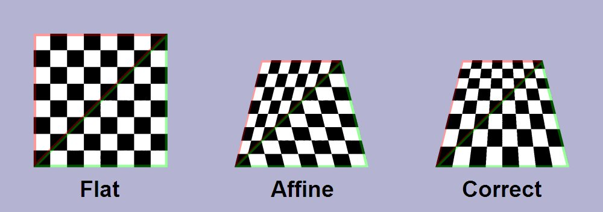

Overview
复习
- 1-Bit 的存储
- Volatile: Delay line, SRAM/DRAM
- Non-volatile: 磁 (磁芯/磁带/磁鼓/软盘/硬盘)、坑 (光盘)、电 (NAND Flash; SSD)
本次课回答的问题
- Q: 器件之上的 “设备” 到底是什么？
本次课主要内容
- 计算机与外设的接口
- 总线、中断控制器和 DMA
- GPU 和异构计算
计算机与世界的接口
孤独的 CPU
CPU 只是 “无情的指令执行机器”
- 取指令、译码、执行

从一个需求说起
如何用计算机实现核弹发射箱？
- 关键问题：如何使计算机能
感知外部状态 、对外实施动作 ？- 我们使用的并不是计算设备，而是 I/O 设备！

I/O 设备：“计算” 和 “物理世界” 之间的桥梁
I/O 设备 (CPU 视角)：“

说人话
- 就是 “几组约定好功能的线” (RTFM)
- 通过握手信号从线上读出/写入数据
- 每一组线有自己的地址
- CPU 可以直接使用指令 (in/out/MMIO) 和设备交换数据
- (CPU 完全不管设备具体是如何实现的)
例子 (1): 串口 (UART)
“COM1”; putch() 的实现
#define COM1 0x3f8
static int uart_init() {
outb(COM1 + 2, 0); // 控制器相关细节
outb(COM1 + 3, 0x80);
outb(COM1 + 0, 115200 / 9600);
...
}
static void uart_tx(AM_UART_TX_T *send) {
outb(COM1, send->data);
}
static void uart_rx(AM_UART_RX_T *recv) {
recv->data = (inb(COM1 + 5) & 0x1) ? inb(COM1) : -1;
}
例子 (2): 键盘控制器
IBM PC/AT 8042 PS/2 (Keyboard) Controller
- “硬编码” 到两个 I/O port:
0x60(data),0x64(status/command)
| Command Byte | Use | 说明 |
|---|---|---|
| 0xED | LED 灯控 | ScrollLock/NumLock/CapsLock |
| 0xF3 | 设置重复速度 | 30Hz - 2Hz; Delay: 250 - 1000ms |
| 0xF4/0xF5 | 打开/关闭 | N/A |
| 0xFE | 重新发送 | N/A |
| 0xFF | RESET | N/A |
参考 AbstractMachine 的键盘部分实现
例子 (3): 磁盘控制器
ATA (Advanced Technology Attachment)
- IDE (Integrated Drive Electronics) 接口磁盘
- primary:
0x1f0 - 0x1f7; secondary:0x170 - 0x177
- primary:
void readsect(void *dst, int sect) {
waitdisk();
out_byte(0x1f2, 1); // sector count (1)
out_byte(0x1f3, sect); // sector
out_byte(0x1f4, sect >> 8); // cylinder (low)
out_byte(0x1f5, sect >> 16); // cylinder (high)
out_byte(0x1f6, (sect >> 24) | 0xe0); // drive
out_byte(0x1f7, 0x20); // command (write)
waitdisk();
for (int i = 0; i < SECTSIZE / 4; i ++)
((uint32_t *)dst)[i] = in_long(0x1f0); // data
}
例子 (4): 打印机

打印机：将字节流描述的文字/图形打印到纸张上
- 可简单 (打字机)
- 可复杂 (编程语言描述的图形)
- 高清全页图片的传输是很大的挑战
例子：PostScript (1984)
- 一种描述页面布局的 domain-specific language
- 类似于汇编语言
- 可以用 “编译器” (例如 latex) 创建高质量的文稿
- PDF 是它的 superset (page.ps)
- 打印机是另一个带 CPU 的设备
总线、中断控制器和 DMA
越来越多的 I/O 设备
如果你只造 “一台计算机”
- 随便给每个设备定一个端口/地址，用 mux 连接到 CPU 就行
- 你们的实验 (AbstractMachine) 和自制 CPU 就是这么做的
 但如果你希望给未来留点空间？
但如果你希望给未来留点空间？
- 想卖大价钱的 “大型机”
- IBM, DEC, ...
- 车库里造出来的 “微型机”
- 名垂青史的梦想家
- 都希望接入更多 I/O 设备
- 甚至是
未知 的设备，但不希望改变 CPU ？
- 甚至是
总线：一个特殊的 I/O 设备
提供
- 把收到的地址 (总线地址) 和数据转发到相应的设备上
- 例子: port I/O 的端口就是总线上的地址
- IBM PC 的 CPU 其实只看到这一个 I/O 设备
- 今天 PCI 总线肩负了这个任务
- 总线可以桥接其他总线 (例如 PCI → USB)
lspci -tv和lsusb -tv: 查看系统中总线上的设备- 概念简单，实际非常复杂……
- 电气特性、burst 传输、中断、Plug and Play……
- 概念简单，实际非常复杂……
例子：PCI Device Probe
pci-probe.c (AbstractMachine, x86-64/i386)
- 试着给 QEMU 增加
-soundhw ac97的运行选项
for (int bus = 0; bus < 256; bus++)
for (int slot = 0; slot < 32; slot++) {
uint32_t info = pciconf_read(bus, slot, 0, 0);
uint16_t id = info >> 16, vendor = info & 0xffff;
if (vendor != 0xffff) {
printf("%02d:%02d device %x by vendor %x", bus, slot, id, vendor);
if (id == 0x100e && vendor == 0x8086) {
printf(" <-- This is an Intel e1000 NIC card!");
}
printf("\n");
}
}
中断控制器

CPU 有一个中断引脚
- 收到某个特定的电信号会触发中断
- 保存 5 个寄存器 (cs, rip, rflags, ss, rsp)
- 跳转到中断向量表对应项执行
系统中的其他设备可以向中断控制器连线
- Intel 8259 PIC
- programmable interrupt controller
- 可以设置中断屏蔽、中断触发等……
- APIC (Advanced PIC)
- local APIC: 中断向量表, IPI, 时钟, ……
- I/O APIC: 其他 I/O 设备
中断没能解的问题
假设程序希望写入 1 GB 的数据到磁盘
- 即便磁盘已经准备好，依然需要非常浪费缓慢的循环
- out 指令写入的是设备缓冲区，需要去总线上绕一圈
- cache disable; store 其实很慢的
for (int i = 0; i < 1 GB / 4; i++) {
outl(PORT, ((u32 *)buf)[i]);
}
能否把 CPU 从执行循环中解放出来？
- 比如，在系统里征用一个小 CPU，专门复制数据?
- 好像
memcpy_to_port(ATA0, buf, length);
Direct Memory Access (DMA)
DMA: memcpy” 程序的 CPU
- 加一个通用处理器太浪费，不如加一个简单的
支持的几种 memcpy
- memory → memory
- memory → device (register)
- device (register) → memory
- 实际实现：直接把 DMA 控制器连接在总线和内存上
- Intel 8237A
PCI 总线支持 DMA
- 干了非常多的脏事
GPU 和异构计算
I/O 设备和计算机之间的边界逐渐模糊
DMA 不就是一个 “做一件特别事情” 的 CPU 吗
- 那么我们还可以有做各种事情的 “CPU” 啊
例如，显示图形
for (int i = 1; i <= H; i++) {
for (int j = 1; j <= W; j++)
putchar(j <= i ? '*' : ' ');
putchar('\n');
}
难办的是性能：NES: 6502 @ 1.79Mhz; IPC = 0.43
- 屏幕共有 256 x 240 = 61K 像素 (256 色)
- 60FPS → 每一帧必须在 ~10K 条指令内完成
- 如何在有限的 CPU 运算力下实现 60Hz？
NES Picture Processing Unit (PPU)

76543210
||||||||
||||||++- Palette
|||+++--- Unimplemented
||+------ Priority
|+------- Flip horizontally
+-------- Flip vertically
CPU 只
- 背景是 “大图” 的一部分
- 每行的前景块不超过 8 个
- PPU 完成图形的绘制
- 一个更简单的 “CPU”


更好的 2D 游戏引擎
如果我们有更多的晶体管？
- NES PPU 的本质是和坐标轴平行的 “贴块块”
- 实现上只需要加法和位运算
- 更强大的计算能力 = 更复杂的图形绘制
2D 图形加速硬件：图片的 “裁剪” + “拼贴”
- 支持旋转、材质映射 (缩放)、后处理、……
实现 3D
- 三维空间中的多边形，在视平面上也是多边形
- Thm. 任何 $n$ 边形都可以分解成 $n-2$ 个三角形
以假乱真的剪贴 3D
GameBoy Advance
- 4 层背景; 128 个剪贴 objects; 32 个 affine objects
- CPU 给出描述；GPU 绘制 (执行 “一个程序” 的 CPU)
但我们还是需要真正的 3D
三维空间中的三角形需要正确渲染
- 这时候建模的东西就多了
- 几何、材质、贴图、光源、……
- Rendering pipeline 里大部分操作都是 massive parallel 的

题外话：如此丰富的图形是怎么来的？
答案：全靠 PS (后处理)
例子：GLSL (Shading Language)
- 使 “shader program” 可以在 GPU 上执行
- 可以作用在各个渲染级别上：vertex, fragment, pixel shader
- 相当于一个 “PS” 程序，算出每个部分的光照变化
- 全局光照、反射、阴影、环境光遮罩……

现代 GPU: 一个通用计算设备
一个完整的众核多处理器系统
- 注重大量并行相似的任务
- 程序使用例如 OpenGL, CUDA, OpenCL, ... 书写
- 程序保存在内存 (显存) 中
- nvcc (LLVM) 分两个部分
- main 编译/链接成本地可执行的 ELF
- kernel 编译成 GPU 指令 (送给驱动)
- nvcc (LLVM) 分两个部分
- 数据也保存在内存 (显存) 中
- 可以输出到视频接口 (DP, HDMI, ...)
- 也可以通过 DMA 传回系统内存
例子：PyTorch 和炼丹炉
什么是 “深度神经网络”？
如何 “训练”？
- 大量计算密集型的任务
class NeuralNetwork(nn.Module):
def __init__(self):
super(NeuralNetwork, self).__init__()
self.flatten = nn.Flatten()
self.linear_relu_stack = nn.Sequential(
nn.Linear(28*28, 512), nn.ReLU(),
nn.Linear(512, 512), nn.ReLU(),
nn.Linear(512, 10), nn.ReLU(), )
...
model = NeuralNetwork().to('cuda')
Dark Silicon Age 和异构计算
能完成 “同一件事” 的部件可能有很多
- 要选择功耗/性能/时间最合适的那个！
- CPU, GPU, NPU, DSP, DSM/RDMA
- 甚至可以丢到另一台计算机上执行：COMET: Code offload by migrating execution transparently (OSDI'12)
{kind=link}